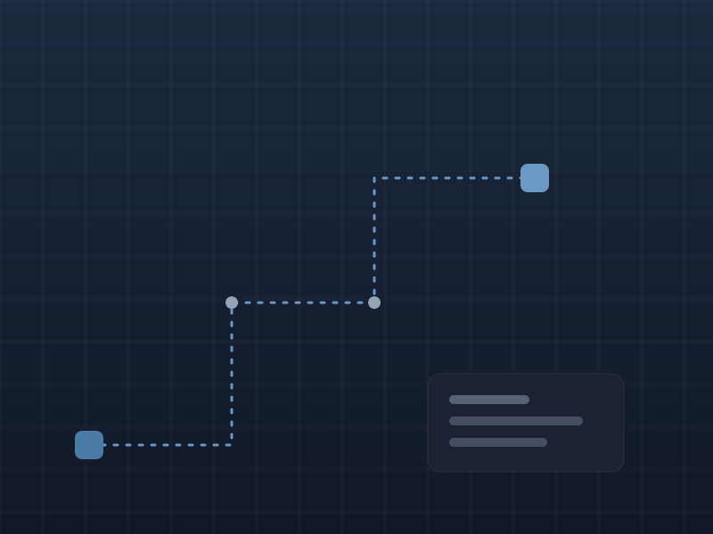
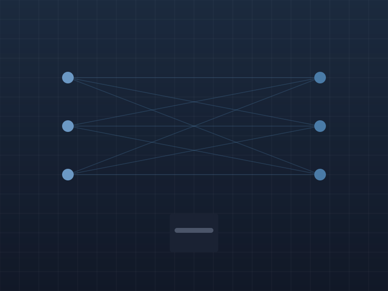
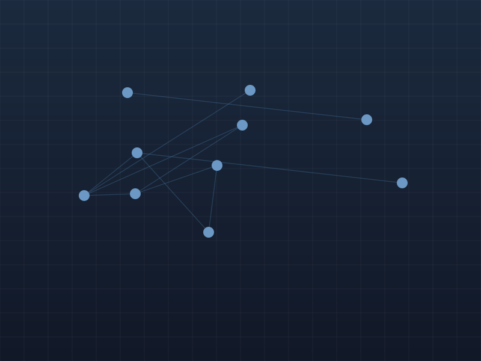

Featured
Spotify
Rethinking Music Discovery
Improving music discovery without increasing complexity. A product teardown exploring user retention, recommendation quality, playlist discovery, and engagement loops.
Every case study begins with a question. Why does this product work? What could be improved? What would I build differently? Rather than critique products, I use them to practice structured product thinking.
Improving music discovery without increasing complexity. A product teardown exploring user retention, recommendation quality, playlist discovery, and engagement loops.
Retention, discovery, recommendation. Spotify

Speed, convenience, expansion. Blinkit

Pricing, marketplace, driver incentives. Uber

Communities, events, network effects. HootMe
Case studies allow me to practice structured product thinking outside commercial constraints. They help me improve my ability to identify problems, prioritize opportunities, evaluate trade-offs, and communicate decisions. Every study is documented like a real product team artifact.